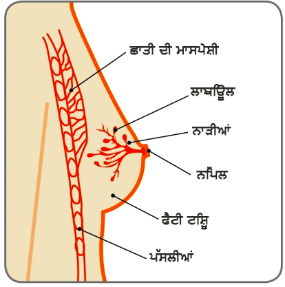
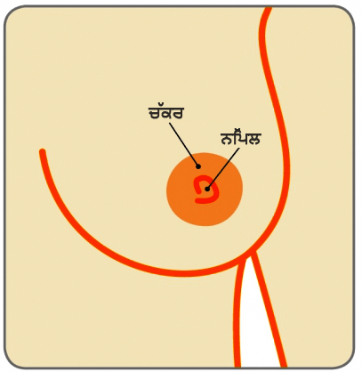

ਛਾਤੀ ਦੀ ਸਿਹਤ ਦੇ ਆਰੰਭਿਕ ਮੁੱਦੇ
ਗਾਇਨੈਕੋਮਸਟੀਆ
ਤਰੁਣ, ਇੱਕ 16 ਸਾਲਾ ਲੜਕੇ ਨੇ ਇੱਕ ਸਾਲ ਦੀ ਅਵਧੀ ਵਿੱਚ ਖੱਬੀ ਛਾਤੀ ਦੇ ਦਰਦਰਹਿਤ ਤਰੀਕੇ ਨਾਲ ਵਧਣ ਨੂੰ ਨੋਟਿਸ ਕੀਤਾ, ਜਿਹੜਾ ਉਸ ਨੂੰ ਤੈਰਨ ਉਸ ਨੂੰ ਤੈਰਨ ਦੌਰਾਨ ਤਕਲੀਫ ਦਿੰਦਾ ਹੈ।
ਭਰਤ, ਇੱਕ 72 ਸਾਲਾ ਬਜੁਰਗ ਭੱਦਰਪੁਰਸ਼ ਨੇ ਛੇ ਮਹੀਨੇ ਦੀ ਅਵਧੀ ਤੋਂ ਰੁਕ ਰੁਕ ਕੇ ਦਰਦ ਹੋਣ ਨਾਲ ਸੱਜੀ ਛਾਤੀ ਵਿੱਚ ਰਸੌਲੀ ਨੂੰ ਮਹਿਸੂਸ ਕੀਤਾ।
ਛਾਤੀ

ਨਿੱਪਲ

ਗਾਇਨੋਕੋਮਸਟੀਆ ਕੀ ਹੁੰਦਾ ਹੈ
ਗਾਇਨੋਕੋਮਸਟੀਆ ਪੁਰਸ਼ ਦੀ ਛਾਤੀ ਦੇ ਟਿਸ਼ੂ ਦਾ ਵਧਣਾ ਹੁੰਦਾ ਹੈ। ਇਹ ਆਮ ਹੁੰਦਾ ਹੈ, ਆਰੰਭਿਕ (ਕੈਂਸਰ ਨਹੀਂ) ਹਾਲਤ ਜੋ ਮੁੱਖ ਰੂਪ ਵਿੱ ਅੱਲ੍ਹੜ ਲੜਕੇ ਅਤੇ ਬਜੁਰਗ ਪੁਰਸ਼ਾਂ ਨੂੰ ਪ੍ਰਭਆਵਿਤ ਕਰਦੀ ਹੈ, ਪਰ ਇਹ ਪੁਰਸ਼ਾ ਨੂੰ ਕਿਸੇ ਵੀ ਉਮਰ ਵਿੱਚ ਪ੍ਰਭਾਵਿਤ ਕਰ ਸਕਦਾ ਹੈ। ਭਾਵੇਂ ਗਾਇਨੋਕੋਮਸਟੀਆ ਬਹੁਤ ਆਮ ਹੁੰਦਾ ਹੈ, ਇਸ ਬਾਰੇ ਬਹੁਤ ਜਿਆਦਾ ਗੱਲ ਨਹੀਂ ਕੀਤੀ ਜਾਂਦੀ ਕਿਉਂਕੀ ਕੁਝ ਕੁ ਲੋਕ, ਖਾਸ ਕਰਕੇ ਲੜਕਿਆਂ ਨੂੰ ਇਹ ਪ੍ਰਭਾਵਿਤ ਕਰ ਸਕਦਾ ਹੈ। ਗਾਇਨੋਕੋਮਸਟੀਆ ਆਮ ਤੌਰ ਤੇ ਅੱਲੜ੍ਹ ਲੜਕਿਆਂ ਨੂੰ ਇਹ ਬਹੁਤ ਉਤਜਿਤ ਅਤੇ ਚਿੰਤਿਤ ਕਰਦਾ ਹੈ ਕਿ ਇਹ ਉਨ੍ਹਾਂ ਨੂੰ ਕਿਉਂ ਹੋਇਆ ਹੈ। ਤਿੰਨ ਵਿੱਚੋਂ ਦੋ ਅੱਲੜ੍ਹ ਲੜਕਿਆਂ ਨੂੰ ਕੁਝ ਹੱਦ ਤੱਕ ਗਾਇਨੋਕੋਮਸਟੀਆ ਹੁੰਦਾ ਹੈ, ਅਤੇ 90% ਕੇਸ ਆਪਣੇ ਆਪ ਠੀਕ ਹੋ ਜਾਂਦੇ ਹਨ।
ਗਾਇਨੋਕੋਮਸਟੀਆਂ ਦੇ ਮੁੱਖ ਕਾਰਣਆਮ ਤੌਰ ਤੇ ਲੜਕਿਆਂ ਵਿੱਚ ਜਵਾਨੀ ਦਾ ਆਰੰਭ ਉਨ੍ਹਾਂ ਦੇ ਕਿਸ਼ੋਰ ਅਵਸਥਾ ਦੇ ਸਾਲਾਂ ਵਿੱਚ ਪਹੁੰਚਣ ਤੇ ਹੁੰਦਾ ਹੈ। ਹਾਲਾਂਕਿ, ਕੁਝ ਲੜਕਿਆਂ ਵਿੱਚ ਤਬਦੀਲੀਆਂ ਮਹਿਸੂਸ ਕੀਤੀਆਂ ਜਾ ਸਕਦੀਆਂ ਹਨ ਜਦੋਂ ਉਹ ਹੀ ਜਵਾਨ ਹੁੰਦੇ ਹਨ ਜਿਵੇਂ ਉਹ 10 ਸਾਲ ਦੇ ਹੋਣ। ਜਦੋਂ ਕਿਸ਼ੋਰ ਅਵਸਥਾ ਸ਼ੁਰੂ ਹੁੰਦੀ ਹੈ ਐਸਟ੍ਰੋਜੈਨ ਅਤੇ ਟੈਸਟੋਸਟੀਸਟੀਰੋਨ ਹਾਰਮੋਨ ਦੇ ਲੈਵਲਾਂ ਵਿੱਚ ਵਾਧਾ ਹੁੰਦਾ ਹੈ। ਐਸਟ੍ਰੋਜੈਨ ਛਾਤੀ ਦੇ ਵਿਕਾਸ ਨੂੰ ਤੇਜ਼ ਕਰਦਾ ਹੈ ਅਤੇ ਟੈਸਟੋਸਟੀਰੋਨ ਛਾਤੀ ਦੇ ਵਾਧੇ ਨੂੰ ਰੋਕਦਾ ਹੈ।
ਇਸ ਦੇ ਨਾਲ ਨਾਲ ਕਿਸ਼ੋਰ ਅਵਸਥਾ ਨਾਲ ਜੁੜੇ ਦੂਜੇ ਬਦਲਾਵ, ਲੜਕੇ ਮਹਿਸੂਸ ਕਰ ਸਕਦੇ ਕਿ ਉਨ੍ਹਾਂ ਦੀਆਂ ਛਾਤੀਆਂ ਕੋਮਲ ਅਤੇ ਵਿਕਸਿਤ ਹੋ ਰਹੀਆਂ ਹਨ। ਇਹ ਕਿਸ਼ੋਰ ਅਵਸਥਾ ਕਾਰਣ ਹੁੰਦਾ ਹੈ, ਅਜਿਹੇ ਹਨ ਜਦੋਂ ਸ਼ਰੀਰ ਵਿੱਚ ਟੈਸਟੋਸਟੀਰੋਨ ਨਾਲੋਂ ਵੱਧ ਔਸਟ੍ਰੋਜੈਨ ਹੁੰਦੇ ਹਨ, ਜਿਹੜਾ ਛਾਤੀ ਦੇ ਟਿਸ਼ੂ ਦੇ ਬਦਲਣ ਦਾ ਕਾਰਣ ਬਣਦੇ ਹਨ। ਜੇਕਰ ਐਸਟ੍ਰੋਜੈਨ ਦੇ ਲੈਵਲ ਟੈਸਟੋਸਟੀਰੋਨ ਦੇ ਲੈਵਲਾਂ ਨਾਲੋਂ ਲਗਾਤਾਰ ਵੱਧ ਰਹਿਣ, ਤਾਂ ਨਾੜੀਆਂ ਅਤੇ ਲਾਬਿਉਲਜ਼ ਵਿਕਸਿਤ ਹੋਣਗੀਆਂ ਅਤੇ ਛਾਤੀ (ਛਾਤੀਆਂ) ਅਤੇ ਵਧੇਰੇ ਨਜ਼ਰ ਆਉਣ ਵਾਲੀਆਂ ਹੋਣਗੀਆਂ।
ਲਗਭਗ 15 ਸਾਲ ਦੀ ਉਮਰ ਨੇੜੇ, ਟੈਸਟੋਸਟੀਰੋਨ ਦੇ ਲੈਵਲ ਐਸਟ੍ਰੋਜੀਨ ਦੇ ਲੈਵਲਾਂ ਨਾਲੋਂ ਇੱਕ ਨਿਰਤੰਰ ਉੱਚੇ ਲੈਵਲ ਤੇ ਸਥਿਰ ਹੋਣਾ ਸ਼ੁਰੂ ਕਰਦੇ ਹਨ। ਇਹ ਐਸਟ੍ਰੋਜੈਨ ਦੇ ਛਾਤੀ ਦੇ ਟਿਸ਼ੂ ਤੇ ਕਿਸੇ ਵੀ ਵਾਧੂ ਪ੍ਰਭਾਵ ਪਾਉਣ ਨੂੰ ਰੋਕਦੇ ਹਨ। ਇੱਕ ਆਦਮੀ ਦੀ ਉਮਰ 19 ਸਾਲ ਦੀ ਹੋਣ ਤੱਕ, ਉਸ ਦੀ ਛਾਤੀ ਜਾਂ ਛਾਤੀਆਂ ਆਮ ਤੌਰ ਤੇ ਹੇਠਾਂ ਨੂੰ ਸੁੰਗੜਨਾ ਅਤੇ ਸਮਤਲ ਹੋਣਾ ਸ਼ੁਰੂ ਕਰਦੀਆਂ ਹਨ।
ਉਮਰ ਦਾ ਵਧਣਾਜਿਵੇਂ ਜਿਵੇਂ ਵਿਅਕਤੀ ਦੀ ਉਮਰ ਵੱਧਦੀ ਹੈ, ਉਲ ਦੇ ਸ਼ਰੀਰ ਵਿੱਚ ਚਰਬੀ ਦੀ ਮਾਕਰਾ ਵਿੱਚ ਵਾਧਾ ਹੁੰਦਾ ਹੈ, ਜਿਹੜਾ ਐਸਟ੍ਰੋਜੈਨ ਪਾਦਾ ਕਰਦਾ ਹੈ। ਇਸ ਤੋਂ ਇਲਾਵਾ, ਜਿਵੇਂ ਜਿਵੇਂ ਵਿਅਕਤੀ ਦੀ ਉਮਰ ਵੱਧਦੀ ਹੈ ਉਹ ਘੱਟ ਟੈਸਟੋਸਟੀਰੋਨ ਵੀ ਪੈਦਾ ਕਰਦੇ ਹਨ। ਐਸਟ੍ਰੋਜੈਨ ਲੈਵਲਾਂ ਵਿੱਚ ਇੱਕ ਵਾਧਾ ਅਤੇ ਟੈਸਟੋਸਟੀਰੋਨ ਲੈਵਲਾਂ ਵਿੱਚ ਕਮੀ ਦਾ ਸੁਮੇਲ ਛਾਤੀਆਂ ਦੇ ਵੱਡਾ ਹੋਣ ਦਾ ਕਾਰਣ ਬਣ ਸਕਦਾ ਹੈ। ਬਾਦ ਦੀ ਉਮਰ ਵਿੱਚ ਭਾਰ ਦਾ ਵੱਧਣਾ ਵੀ ਵਿਸ਼ੇਸ਼ ਰੂਪ ਵਿੱਚ ਛਾਤੀ ਦੇ ਖੇਤਰ ਵਿੱਚ ਦੇਖਿਆ ਜਾਂਦਾ ਹੈ, ਜਿਸ ਕਾਰਣ ਛਾਤੀਆਂ ਵੱਡੀਆਂ ਹੁੰਦੀਆਂ ਹਨ। ਇਸ ਨੂੰ ਸੂਡੋ- ਗਾਇਨੋਕੋਮਸਟੀਆ ਵਜੋਂ ਜਾਣਿਆ ਜਾਂਦਾ ਹੈ। ਬਹੁਤ ਸਾਰੇ ਪੁਰਸ਼ ਇਸ ਨੂੰ ਉਮਰ ਦੇ ਵੱਧਣ ਦੀ ਪ੍ਰਕਿਰਿਆ ਦੇ ਇੱਕ ਹਿੱਸੇ ਵਜੋਂ ਲੈਂਦੇ ਹਨ।
ਦੁਜੇ ਕਾਰਣਕੁਝ ਕੁ ਦਵਾਈਆਂ (ਦੋਨੋਂ ਪ੍ਰਸਤਾਵਿਤ ਅਤੇ ਗੈਰਕਾਨੁੰਨੀ) ਕਾਰਣ ਗਾਇਨੋਕੋਮਸਟੀਆ ਹੋ ਸਕਦਾ ਹੈ। ਉਨ੍ਹਾਂ ਵਿੱਚ ਐਸਟ੍ਰੋਜੈਨ ਹੋ ਸਕਦਾ ਹੈ, ਜਿਹੜਾ ਸ਼ਰੀਰ ਵਿੱਚ ਚੱਲਣ ਵਾਲੇ ਹਾਰਮੋਨ ਦੇ ਲੈਵਲ ਨੂੰ ਵਧਾਉਂਦਾ ਹੈ, ਜਾਂ ਐਸਟ੍ਰੋਜੈਨ-ਵਰਗਾ ਇੱਕ ਪ੍ਰਭਾਵ ਪੈਦਾ ਕਰਦੈ ਹੈ। ਅਜਿਹੀ ਸਥਿਤੀ ਕੈਨੇਬਿਸ ਵਰਗੀ ਦਵਾਈ ਨਾਲ ਹੁੰਦੀ ਹੈ। ਕੁਝ ਕੁ ਦਵਾਈਆਂ ਟੈਸਟੋਸਟੀਰੋਨ ਦੇ ਉਤਪਾਦਨ ਨੂੰ ਇੱਕਦਮ ਬੰਦ ਕਰ ਦਿੰਦੀਆਂ ਹਨ, ਜਿਹੜਆ ਚੱਲਣ ਵਾਲੇ ਟੈਸਟੋਸਟੀਰੋਨ ਦੇ ਲੈਵਲ ਨੂੰ ਘਟ ਕਰਦਾ ਹੈ।
ਪ੍ਰਸਤਾਵਿਤ ਦਵਾਈਆਂ ਦੀਆਂ ਬਹੁਤ ਸਾਰੀਆਂ ਕਿਸਮਾਂ ਸ਼ਰੀਰ ਵਿੱਚ ਹਾਰਮੋਨ ਸੰਤੁਲਨ ਨੂੰ ਬਦਲ ਸਕਦੀਆਂ ਹਨ। ਹਾਈ ਬਲੱਡ ਪ੍ਰੈਸ਼ਰ ਜਾਂ ਦਿਲ ਦੇ ਰੋਗਾਂ, ਕੁਝ ਕੁ ਮਨੋਰੋਗਾਂ, ਪੇਟ ਦੇ ਫੋੜਿਆਂ ਲਈ ਲਈਆਂ ਜਾਣ ਵਾਲੀਆਂ ਦਵਾਈਆਂ, ਕੁਝ ਕੁ ਕੈਂਸਰ ਥੈਰੇਪੀਆਂ ਅਤੇ ਕੁਝ ਕੁ ਐਂਟੀਬਾਇਟਕਾਂ ਦੇ ਨਾਲ ਨਾਲ ਮਾਸ-ਪੇਸ਼ੀਆਂ ਨੂੰ ਮਜ਼ਬੂਤ ਕਰਨ ਵਾਲੀਆਂ ਦਵਾਈਆਂ, ਸਾਰੀਆਂ ਹੀ ਗਾਇਨੋਕੋਮਸਟੀਆ ਦਾ ਕਾਰਣ ਹੋ ਸਕਦੀਆਂ ਹਨ।.
ਹਰਬਲ ਉਤਪਾਦਕੁਝ ਕੁ ਹਰਬਲ ਅਨੁਪੂਰਕਾਂ ਅਤੇ ਕੁੱਝ ਕੁ ਕਾਸਮੈਟਿਕਾਂ ਵਿੱਚ ਐਸਟ੍ਰੋਜੈਨ ਹੁੰਦਾ ਹੈ। ਇਹ ਸ਼ਰੀਰ ਵਿੱਚ ਚੱਲਣ ਵਾਲੇ ਹਾਰਮੋਨ ਦੇ ਲੈਵਲਾਂ ਨੂੰ ਵਧਾ ਸਕਦਾ ਹੈ ਜਾਂ ਇੱਕ ਐਸਟ੍ਰੋਜੈਨ-ਵਰਗਾ ਪ੍ਰਭਾਵ ਪਾ ਸਕਦਾ ਹੈ, ਬੱਚਿਆਂ ਅਤੇ ਬਾਲਗਾਂ ਦੋਹਾਂ ਤੇ। ਇੱਕ ਵਾਰ ਜਦੋਂ ਤੁਸੀਂ ਉਨ੍ਹਾਂ ਦੀ ਵਰਤੋਂ ਕਰਨਾ ਬੰਦ ਕਰਦੇ ਹੋ, ਪ੍ਰਭਾਵ ਬੰਦ ਹੁੰਦਾ ਹੈ ਅਤੇ ਇਸ ਦੇ ਉਲਸਰੂਪ ਛਾਤੀ ਦਾ ਟਿਸ਼ੂ ਹੇਠਾਂ ਵੱਲ ਸੈਟ ਹੋ ਸਕਦੇ ਹਨ।
ਭੋਜਨ ਅਤੇ ਭਾਰਇੱਕ ਵਿਅਕਤੀ ਅੰਦਰ ਦੇ ਸੈਲ ਜਿੰਨੇ ਜਿਆਦਾ ਹੁੰਦੇ ਹਨ, ਉਹ ਉਨ੍ਹਾਂ ਵੱਧ ਐਸਟ੍ਰੋਜੈਨ ਪੈਦਾ ਕਰਦੇ ਹਨ। ਇਸ ਕਾਰਣ ਛਾਤੀ ਦੇ ਟਿਸ਼ੂ ਨੂੰ ਵਿਕਸਿਤ ਕਰ ਸਕਦਾ ਹੈ। ਇੱਕ ਚੰਗੀ ਸੰਤੁਲਿਤ ਖੁਰਾਕ ਅਤੇ ਕਸਰਤ ਇੱਕ ਸਿਹਤਮੰਦ ਭਾਰ ਬਣਾਈ ਰੱਖਣ ਲਈ ਮਹੱਤਵਪੂਰਣ ਹੁੰਦੇ ਹਨ।.
ਸ਼ਰਾਬਬਹੁਤ ਜਿਆਦਾ ਸ਼ਰਾਬ ਪੀਣ ਨੇ ਕਈ ਤਰੀਕਿਆਂ ਨਾਲ ਜਿਗਰ ਦੇ ਪ੍ਰਭਾਵਿਤ ਹੋਣ ਨੂੰ ਪ੍ਰਭਾਵਿਤ ਹੋਣ ਨੂੰ ਦਰਸ਼ਾਇਆ ਹੈ ਅਤੇ ਜਿਸ ਕਾਰਣ ਬਹੁਤ ਸਾਰੀਆਂ ਬੀਮਾਰਿਆਂ ਹੋ ਸਕਦੀਆਂ ਹਨ। ਸ਼ਰਾਬ ਦੀ ਬਹੁਤ ਜਿਆਦਾ ਮਾਤਰਾ ਜਿਗਰ ਨੂੰ ਉਤੇਜਿਤ ਕਰਦੀ ਹੈ, ਜਿਹੜਾ ਹਾਰਮੋਨ ਅਸੰਤੁਲਨ ਪੈਦਾ ਕਰਦਾ ਹੈ। ਸਰਕੂਲੇਟ ਹੋਣ ਵਾਲਾ ਟੈਸਟੋਸਟੀਰੋਨ ਘੱਟਦਾ ਹੈ, ਪਰ ਐਸਟ੍ਰੋਜੈਟਨ ਦੇ ਲੈਵਲਾਂ ਵਿੱਚ ਵਾਧਾ ਹੁੰਦਾ ਹੈ (ਕਿਉਂਕਿ ਜਿਗਰ ਘੁੰਮਣ ਵਾਲੇ ਐਸਟ੍ਰੋਜੈਨ ਨੂੰ ਤੋੜਨਾ ਬੰਦ ਕਰਦਾ ਹੈ)। ਇਸ਼ ਤੋਂ ਭਾਵ ਹੈ ਕਿ ਛਾਤੀ ਦਾ ਟਿਸ਼ੂ ਵਿਕਸਿਤ ਹੋ ਸਕਦਾ ਹੈ।
ਕਈ ਵਾਰ ਇਹ ਦੱਸਣਾ ਸੰਭਵ ਨਹੀਂ ਹੁੰਦਾ ਹੈ ਕਿ ਪੁਰਸ਼ ਅੰਦਰ ਗਾਇਨੋਕੋਮਸਟੀਆ ਕਿਉਂ ਵਿਕਸਿਤ ਹੁੰਦਾ ਹੈ। ਹਾਲਾਂਕਿ, ਇਸ ਨੂੰ ਸਹੀ ਕਰਨ ਦੇ ਉਪਚਾਰ ਵਿਕਲਪ ਮਸਾਨ ਹੋ ਸਕਦੇ ਹਨ ਜਦੋਂ ਕਾਰਣ ਗਿਆਨ ਹੁੰਦਾ ਹੈ।ਗਾਇਨੋਕੋਮਸਟੀਆ ਦੇ ਕਿਹੜੇ ਲੱਛਣ ਹੁੰਦੇ ਹਨ
ਗਾਇਨੋਕੋਮਸਟੀਆ ਲੱਛਣ ਨਿੱਪਲ ਦੇ ਬਿਲਕੁੱਲ ਪਿਛਲੇ ਪਾਸਿਓਂ ਛਾਤੀ ਦੇ ਟਿਸ਼ੂ ਦੇ ਇੱਕ ਛੋਟੇ, ਠੋਸ ਵਾਧੇ ਤੋਂ ਲੈ ਕੇ ਇੱਕ ਵੱਡੇ, ਵਧੇਰੇ ਔਰਤ-ਲੱਗਣ ਵਰਗੀ ਛਾਤੀ ਤੱਕ ਬਦਲ ਸਕਦੇ ਹਨ। ਗਾਇਨੋਕੋਮਸਟੀਆ ਇੱਕ ਜਾਂ ਦੋਹਾਂ ਛਾਤੀਆਂ ਨੂੰ ਪ੍ਰਭਾਵਿਤ ਕਰ ਸਕਦਾ ਹੈ। ਇਹ ਖੇਤਰ ਸਪੱਰਸ਼ ਕਰਨ ਤੇ ਕੋਮਲ ਤੋਂ ਦਰਦਨਾਕ ਮਹਿਸੂਸ ਹੋ ਸਕਦਾ ਹੈ।
ਅਸਲ ਗਾਇਨੋਕੋਮਸਟੀਆ (ਛਾਤੀ ਦੇ ਟਿਸ਼ੂ ਦੇ ਵਾਧੇ ਦੁਆਰਾ ਹੋਣ ਵਾਲਾ) ਸੂਡੋ- ਗਾਇਨੋਕੋਮਸਟੀਆ ਤੋਂ ਵੱਖਰਾ ਹੁੰਦਾ ਹੈ, ਜਿਹੜਾ ਕਿ ਚਰਬੀ ਦੇ ਟਿਸ਼ੂ ਇੱਕ ਵਾਧਆ ਹੁੰਦਾ ਹੈ। ਹਾਲਾਂਕਿ, ਗਾਇਨੋਕੋਮਸਟੀਆ ਦੋਹਾਂ ਦਾ ਮਿਸ਼ਰਣ ਵੀ ਹੋ ਸਕਦਾ ਹੈ।
ਲੜਕਿਆਂ ਵਿੱਚ ਛਾਤੀ ਦਾ ਵਿਕਾਸਛਾਤੀ ਦਾ ਟਿਸ਼ੂ ਕੁੱਖ ਵਿੱਚ ਹੋਣ ਸਮੇਂ ਵਿਕਸਿਤ ਹੁੰਦ ਹਨ। ਇਸ ਸਮੇਂ ਦੌਰਾਨ, ਛਾਤੀਆਂ ਨਿੱਪਲ ਦੇ ਪਿੱਛੇ ਛੋਟੀਆਂ ਬਰਾਂਚਿੰਗ ਟਿਉਬਾਂ (ਨਾੜੀਆਂ) ਨੂੰ ਤਿਆਰ ਕਰਦੀਆਂ ਹਨ। ਜਦੋਂ ਤੱਕ ਲੜਕੇ ਆਪਣੇ ਜਵਾਨੀ ਦੇ ਸਾਲਾਂ ਅਤੇ ਕਿਸ਼ੋਰ ਅਵਸਥਾ ਵਿੱਚ ਨਹੀਂ ਪਹੁੰਚਦੇ ਹਨ, ਉਨ੍ਹਾਂ ਦੀ ਛਾਤੀ ਦੀ ਟਿਸ਼ੂ ਲੜਕੀਆਂ ਦੇ ਟਿਸ਼ੂ ਲੜਕੀਆਂ ਦੇ ਟਿਸ਼ੂ ਸਮਾਨ ਹੁੰਦੇ ਹਨ। ਹਾਲਾਂਕਿ, ਜਦੋਂ ਉਹ ਕਿਸ਼ੋਰ ਅਵਸਥਾ ਵਿੱਚ ਪੁੱਜਦੇ ਹਨ, ਵਧੇ ਹੋਏ ਹਾਰਮੋਨ ਲੈਵਲ ਛਾਤੀ ਦੇ ਟਿਸ਼ੂ ਦੇ ਹੋਰ ਵਿਕਾਸ ਨੂੰ ਪ੍ਰਭਾਵਿਤ ਕਰਦੇ ਹਨ।
ਲੜਕੀਆਂ ਅੰਦਰ, ਹਾਰਮੋਨ ਐਸਟ੍ਰੋਜੈਨ ਕਾਰਣ ਛਾਤੀਆਂ ਅਤੇ ਦੁੱਧ ਪੈਦਾ ਕਰਨ ਵਾਲਿਆਂ ਗ੍ਰੰਥੀਆਂ (ਲਾਬਿਉਲਜ) ਦਾ ਵਿਕਾਸ ਹੁੰਦਾ ਹੈ ਨਾੜੀਆਂ ਦੇ ਕਿਨਾਰੇ ਨੂੰ ਤਿਆਰ ਕਰਣ ਲਈ, ਇਸ ਪ੍ਰਕਾਰ ਇੱਕ ਔਰਤ ਦੀਆਂ ਛਾਤੀਆਂ ਨਿੱਪਲ ਤੱਕ ਦੁੱਧ ਲਿਜਾਉਣ ਦੇ ਯੋਗ ਹੁੰਦੀਆਂ ਹਨ।
ਲੜਕਿਆਂ ਅੰਦਰ ਵੀ ਕਿਸ਼ੋਰ ਅਵਸਥਾ ਦੌਰਾਨ ਐਸਟ੍ਰੋਜੈਨ ਦੇ ਲੈਵਲ ਵੱਧ ਹੁੰਦੇ ਹਨ, ਪਰ ਅਪਣੀ ਕਿਸ਼ੋਰ ਅਵਸਥਾ ਦੇ ਖਤਮ ਹੋਣ ਦੇ ਸਾਲ਼ਾਂ ਤੇ ਉਨ੍ਹਾਂ ਅੰਦਰ ਆਮ ਤੌਰ ਤੇ ਹਾਰਮੋਨ ਟੈਸਟੋਸਟੀਰੋਨ ਦੇ ਲੈਵਲਾਂ ਵਿੱਚ ਕਾਫੀ ਵਾਧਾ ਹੁੰਦਾ ਹੈ। ਇਹ ਛਾਤੀ ਦੇ ਟਿਸ਼ੂ ਤੇ ਐਸਟ੍ਰੋਜੈਨ ਦੇ ਪ੍ਰਭਾਵ ਨੂੰ ਰੋਕਦਾ ਹੈਸ ਅਤੇ ਛਾਤੀ ਆਮ ਤੌਰ ਤੇ ਸਮਤਲ ਹੋ ਜਾਂਦੀ ਹੈ।
ਗਾਇਨੋਕੋਮਸਟੀਆ ਦੀ ਤਸ਼ਖੀਸ ਕਿਵੇਂ ਕੀਤੀ ਜਾਂਦੀ ਹੈ?
ਇੱਕ ਮਾਹਿਰ ਦੁਆਰਾ ਕਲਿਨੀਕਲ ਛਾਤੀ ਦੀ ਜਾਂਚ ਅਤੇ ਦੋਹਾਂ ਛਾਤੀਆਂ ਦੀ ਅਲਟ੍ਰਾਸਾਉਂਡ ਸਕੈਨ ਕਰਵਾਉਣੀ ਜਰੂਰੀ ਹੁੰਦੀ ਹੈ। ਇਸ ਆਰੰਭਿਕ ਦੇ ਆਧਾਰ ਤੇ, ਮਹਿਰ ਇੱਕ ਮੈਮੋਗ੍ਰਾਮ ਅਤੇ ਨੀਡਲ ਬਾਯੋਪਸੀ ਕਰਵਾਉਣ ਲਈ ਕਹਿ ਸਕਦਾ ਹੈ (ਛਾਤੀਆਂ ਦਾ ਐਕਸ ਰੇਅ) ਵਿਸ਼ੇਸ਼ ਤੌਰ ਤੇ ਜੇਕਰ ਪੁਰਸ਼ ਦੀ ਉਮਰ ਜਿਆਦਾ ਹੋਵੇ (ਐਫਐਨਏਸੀ/ਕੋਰ ਨੀਡਲ ਬਾਯੋਪਸੀ)
ਕਿਉਂਕਿ ਗਾਇਨੋਕੋਮਸਟੀਆ ਦੁਜੀਆਂ ਹਾਸਤਾਂ ਦਾ ਇੱਕ ਲੱਛਣ ਵੀ ਹੋ ਸਕਦਾ ਹੈ, ਜਿਵੇਂ ਕਿ ਹਾਈਪ੍ਰਥਾਇਰੋਡਿਜ਼ਮ (ਓਵਰਐਕਟਿਵ ਥਾਇਰਾਇਡ ਗ੍ਰੰਥੀ), ਮਾਹਿਰ ਗਰਦਨ, ਪੇਟ (ਢਿੱਡ) ਅਤੇ ਅੰਜਕੋਸ਼ ਦੀ ਜਾਂਚ ਕਰਨ ਦੀ ਇੱਛਾ ਰੱਖ ਸਤਦਾ ਹੈ। ਖੂਨ ਦੇ ਟੈਸਟ ਜਿਵੇਂ ਕਿ ਜਿਗਰ ਦੇ ਕੰਮ ਕਰਨ ਦੇ ਟੈਸਟ, ਅਲਫਾ ਫੀਟੋ ਪ੍ਰੋਟੀਨ ਅਤੇ ਬੀ ਐਚਸੀਜੀ ਦੇ ਕਰਮ ਦੀ ਲੋੜ ਵੀ ਪੈ ਸਕਦੀ ਹੈ।
ਗਾਇਨੋਕੋਮਸਟੀਆ ਦਾ ਕੀ ਇਲਾਜ ਹ?
ਬਹੁਤ ਸਾਰੀਆਂ ਹਾਲਤਾਂ ਵਿੱਚ, ਸਿਰਫ ਯਕੀਨ ਦਿਵਾਉਣ ਦੀ ਲੋੜ ਹੁੰਦੀ ਹੈ। ਕਿਸੇ ਖਾਸ ਇਲਾਜ ਦਾ ਸੁਝਾਵ ਨਹੀਂ ਦਿੱਤਾ ਜਾਂਦਾ। ਕੁਝ ਕੁ ਲੋਕਾਂ ਲਈ, ਵਾਧੂ ਛਾਤੀ ਦੇ ਟਿਸ਼ੂ ਦੇ ਸੁੰਗੜਨ ਲਈ ਸਿਰਫ ਗਾਇਨੋਕੋਮਸਟੀਆ (ਜਿਵੇਂ ਕਿ ਦਵਾਇਆਂ ਬਦਲਣਾ, ਵਾਧੂ ਸਰੀਰਕ ਚਰਬੀ ਨੂੰ ਘਟਾਉਣਾ ਜਾਂ ਸ਼ਰਾਬ ਦੇ ਸੇਵਨ ਨੂੰ ਘਟਾਉਣਾ) ਦੇ ਕਾਰਣ ਨੂੰ ਹੀ ਹਟਾਉਣ ਦੀ ਲੋੜ ਹੁੰਦੀ ਹੈ। ਕੁੱਝ ਕੁ ਲੋਕਾਂ ਨੂੰ ਕੁੱਝ ਸਮੇਂ ਲਈ, ਮਾਹਿਰ ਦੇ ਫੈਸਲੇ ਅਨੁਸਾਰ, ਡਾਕਟਰੀ ਇਲਾਜ਼ (ਡੈਨਾਜੋਲ/ ਟੈਮੌਕਸੀਫੈਨ) ਕਰਵਾਉਣ ਦੀ ਲੋੜ ਪੈ ਸਕਦੀ ਹੈ।
ਆਮ ਤੌਰ ਤੇ, ਕੇਵਲ ਸਰਜਰੀ ਦਾ ਹੀ ਸੁਝਾਅ ਦਿੱਤਾ ਜਾਂਦਾ ਹੈ ਜੇਕਰ ਜੀਵਨਸ਼ੈਲੀਆਂ ਦੇ ਬਦਲਾਵ ਅਤੇ/ਜਾਂ ਡਾਕਟਰੀ ਇਲਾਜਾਂ ਦੇ ਨਾਲ ਗਾਇਨੋਕੋਮਸਟੀਆ ਵਿੱਚ ਸੁਧਾਰ ਨਹੀਂ ਹੁੰਦਾ ਹੈ, ਜਾਂ ਜੇਕਰ ਇਹ ਕਾਫੀ ਲੰਮੇਂ ਸਮੇਂ ਲਈ ਰਹਿੰਦਾ ਹੈ ਅਤੇ ਇਹ ਤੁਹਾਡੇ ਜੀਵਨ ਦੀ ਗੁਣਵੱਤਾ ਨੂੰ ਪੱਭਾਵਿਤ ਕਰਦਾ ਹੈ।
ਮਾਹਿਰ ਨੂੰ ਸਰਜਰੀ ਨੂੰ ਇੱਕ ਵਿਕਲਪ ਵਜੋਂ ਲਏ ਜਾਣ ਤੋਂ ਪਹਿਲਾਂ ਸਰਜਰੀ ਬਾਰੇ ਕਿਸੇ ਵੀ ਜੋਖਮਾਂ ਤੇ ਚਰਚਾ ਕਰਨੀ ਚਾਹੀਦੀ ਹੈ ਕਿਉਂਕਿ ਗਾਇਨੋਕੋਮਸਟੀਆ ਦੀ ਸਰਜਰੀ ਕਰਨਾ ਸੌਖਾ ਨਹੀਂ ਹੁੰਦਾ। ਅਪਰਸ਼ਨ ਦੀ ਕਿਸਮ ਗਾਇਨੋਕੋਮਸਟੀਆ ਦੇ ਸਾਇਜ ਅਤੇ ਛਾਤੀ ਦੇ ਖੇਤਰ ਤੇ ਵਾਧੂ ਚਰਬੀ ਦੀ ਮਾਤਰਾ ਤੇ ਨਿਰਭਰ ਕਰੇਗੀ। ਇਸ ਦਾ ਉਦੇਸ਼ ਪੁਰਸ਼ ਦੀ ਛਾਤੀ ਦਾ ਵਧੇਰੇ ਆਮ ਸਾਈਜ਼ ਬਰਕਰਾਰ ਰੱਖਣਾ ਹੁੰਦਾ ਹੈ ਅਤੇ ਕਈ ਵਾਰ ਇਸ ਵਿੱਚ ਇੱਕ ਨਾਲੋਂ ਵੱਧ ਅਪਰੇਸ਼ਨ ਸ਼ਾਮਿਲ ਹੁੰਦੇ ਹਨ।
ਲਿਪੋਸਕਸ਼ਨ (ਇੱਕ ਸਰਜੀਕਲ ਪ੍ਰਕਿਰਿਆ ਜਿਸ ਵਿੱਚ ਪ੍ਰਭਾਵਿਤ ਖੇਤਰ ਤੋਂ ਚਰਬੀ ਨੂੰ ਹਟਾਇਆ ਜਾਂਦਾ ਹੈ) ਸਭ ਤੋਂ ਆਮ ਵਿਧੀਆਂ ਵਿੱਚੋਂ ਇੱਕ ਹੈ। ਇਹ ਆਪਣੇ ਆਪ ਵਿੱਚ ਹੀ ਇੱਕ ਉਪਚਾਰ ਹੋ ਸਕਦੀ ਹੈ ਜਾਂ ਸਮਾਨ ਹੋ ਸਕਦੀ ਹੈ ਜਾਂ ਸਮਾਨ ਸਮੇਂ ਤੇ ਇੱਕ ਛਾਤੀ ਘਟਾਉਣ ਦਾ ਅਪਰੇਸ਼ਨ (ਜਿਸ ਨੂੰ ਇੱਕ ਘਟਾਉਣ ਵਾਲੀ ਮੈਮੋਪਲਾਸਟੀ ਵਜੋਂ ਵੀ ਜਾਣਿਆ ਜਾਂਦਾ ਹੈ)। ਛਾਤੀ ਦਾ ਘੱਟ ਕਰਨਾ ਲਿਪੋਸਕਸ਼ਨ ਤੋਂ ਬਿਨਾਂ ਵੀ ਕੀਤਾ ਜਾ ਸਕਦਾ ਹੈ। ਕਿਉਂਕਿ ਉੱਪਰ ਦਿੱਤੀਆਂ ਗਈਆਂ ਸਾਰੀਆਂ ਪ੍ਰਕਿਰਿਆਵਾਂ ਛਾਤੀ ਦੇ ਕੁੱਝ ਟਿਸ਼ੂ ਨੂੰ ਛੱਡ ਸਕਦੀਆਂ ਹਨ, ਗਾਇਨੋਕੋਮਸਟੀਆ ਅਜੇ ਵੀ ਦੁਬਾਰਾ ਹੋ ਸਕਦਾ ਹੈ।.
ਗਾਇਨੋਕੋਮਸਟੀਆ ਇਸ ਨਾਲ ਪ੍ਰਭਾਵਿਤ ਕਿਸੇ ਵੀ ਵਿਅਕਤੀ ਲਈ ਚਿੰਤਾਜਨਕ, ਸ਼ਰਮਨਾਕ ਅਤੇ ਅਲੱਗ-ਅਲੱਗ ਕਰਨ ਵਾਲਾ ਅਨੁਭਵ ਹੋ ਸਕਦਾ ਹੈ। ਕਿਸ਼ੋਰ ਅਵਸਥਾ ਵਿੱਚੇ ਗੁਜਰਨ ਵਾਲੇ ਅਤੇ ਸ਼ਰੀਰਕ ਬਦਲਾਵਾਂ ਦਾ ਸਾਹਮਣਾ ਕਰਨ ਵਾਲੇ ਲੜਕਿਆਂ ਲਈ ਕਿਸੇ ਵੀ ਵਿਕਤੀ ਨਾਲ ਆਪਣੀਆਂ ਵੱਧ ਰਹੀਆਂ ਜਾਂ ਦਰਦਨਾਕ ਛਾਤੀਆਂ ਬਾਰੇ ਚਰਚਾ ਕਰਨਾ ਖਾਸ ਤੌਰ ਤੇ ਮੁਸ਼ਕਲ ਹੋ ਸਕਦਾ ਹੈ। ਜਿਸ ਦੇ ਨਤੀਜੇ ਵਜੋਂ, ਅੱਲੜ੍ਹ ਲੜਕੇ ਆਮ ਤੌਰ ਤੇ ਮਹਿਲੂਲ ਨਹੀਂ ਕਰਦੇ ਹਨ ਕਿ ਇਹ ਹਾਲਤ ਕਿਨੀ ਕੁ ਆਮ ਹੈ। ਬਜੁਰਗ ਵਿਅਕਤੀ ਚਿੰਤਿਤ ਹੋ ਸਕਦੇ ਹਨ ਕਿ ਉਨ੍ਹਾਂ ਦੀਆਂ ਛਾਤੀਆਂ ਵਿੱਚ ਬਦਲਾਵ ਕੈਂਸਰ ਦਾ ਇੱਕ ਲੱਛਣ ਹਨ।
ਗਾਇਨੋਕੋਮਸਟੀਆ ਦਾ ਹੋਣਾ ਛਾਤੀ ਦੇ ਕੈਂਸਰ ਦੇ ਜੋਖਮ ਨੂੰ ਨਹੀਂ ਵਧਾਉਂਦਾ ਹੈ। ਹਾਲਾਂਕਿ, ‘ਛਾਤੀ ਬਾਰੇ ਜਾਗਰੂਕ’ ਹੋਣਾ ਪੁਰਸ਼ਾਂ ਲਈ ਵੀ ਮਹੱਤਵਪੂਰਣ ਹੁੰਦਾ ਹੈ ਅਤੇ ਜੇਕਰ ਛਾਤੀ ਵਿੱਚ ਕੋਈ ਵੀ ਨਵੇਂ ਬਦਲਾਵ ਨਜ਼ਰ ਆਉਂਦੇ ਹੋਣ ਤਾਂ ਇਸ ਬਾਰੇ ਇੱਕ ਮਾਹਿਰ ਨੂੰ ਰਿਪੋਰਟ ਕਰਨਾ।
ਛਾਤੀ ਬਾਰੇ ਜਾਗਰੂਕਤਾ 4 ਪੁਆਇੰਟ ਕੋਡ